Инструкция пользователя
Полное руководство с пошаговыми скриншотами. Красные номера на картинках соответствуют описанию под ними.
1. Запуск и требования
- Windows: 7 SP1, 10, 11 или Server 2019. Нужен .NET Framework 4.0 или новее (в Windows 10/11 уже установлен).
- SQL Server: 2012–2022. Нужен вход администратора: через Windows-аутентификацию или логином
sa. Firebird 3+ и MySQL 8 — через установленный ODBC-драйвер, вход администратором СУБД. - Установка не требуется. Скопируйте
LoginChanger.exeв любую папку (или на флешку) и запустите. Для SQL Server дополнительные драйверы не нужны. - Рядом с программой создаются:
logs\(журнал по дням),templates\(шаблоны прав),loginchanger.ini(сервер, база, тема; без паролей).
2. Подключение к серверу
При запуске открывается окно подключения. Доступны только поля входа — выбор базы появится после успешной авторизации.
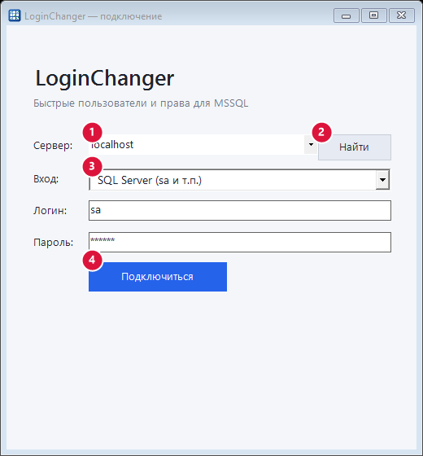
- 1Сервер. Введите адрес (
localhost,SRV\INSTANCE,192.168.0.10,1433) или выберите из списка. - 2Найти. Показывает локальные экземпляры и ищет серверы в сети (до 8 секунд, нужна служба SQL Server Browser).
- 3Вход. «Windows-аутентификация» (под текущим пользователем) или «SQL Server» (укажите логин и пароль, например
sa). - 4Подключиться. Проверяет вход и загружает список баз.
После успешного входа появляется выбор базы данных:
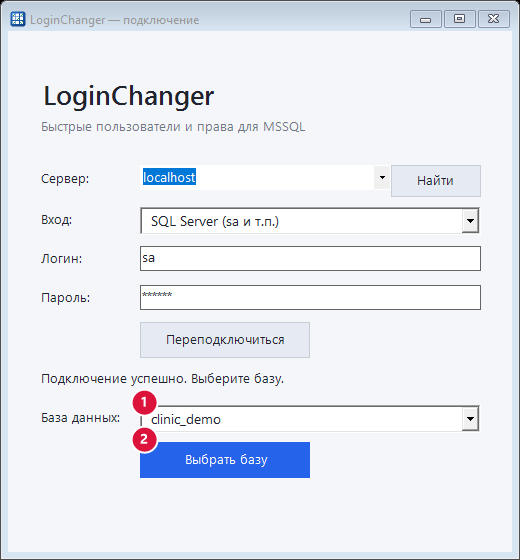
- 1База данных. Список баз, к которым у вас есть доступ.
- 2Выбрать базу. Открывает главное окно. Если вы измените сервер, логин или пароль, выбор базы снова скроется.
2а. Firebird и MySQL
На экране подключения выберите СУБД. Для Firebird и MySQL используются ODBC-драйверы, уже установленные в Windows; нужный драйвер подставляется автоматически (для MySQL предпочтительно Unicode-вариант).
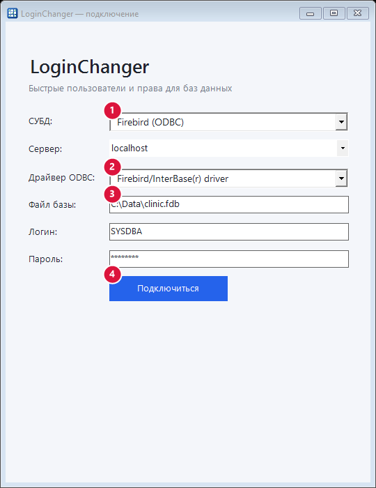
- 1СУБД: SQL Server, Firebird (ODBC) или MySQL / MariaDB (ODBC).
- 2Драйвер ODBC. Выбирается из установленных; если пусто — установите драйвер (Firebird ODBC или MySQL Connector/ODBC той же разрядности, что и система).
- 3Файл базы (только Firebird) — путь к
.fdbна сервере, напримерC:\Data\clinic.fdb. Сервер можно указать какхостилихост:порт. - 4Подключиться. Логин и пароль — администратора СУБД (
SYSDBAдля Firebird,rootдля MySQL).
Дальше всё работает так же, как в SQL Server: вкладки «Пользователи», «Представления», «Функции и процедуры», «Таблицы». У MySQL после входа выбирается база (системные скрыты), у Firebird база — это файл, поэтому появляется только кнопка «Открыть базу».
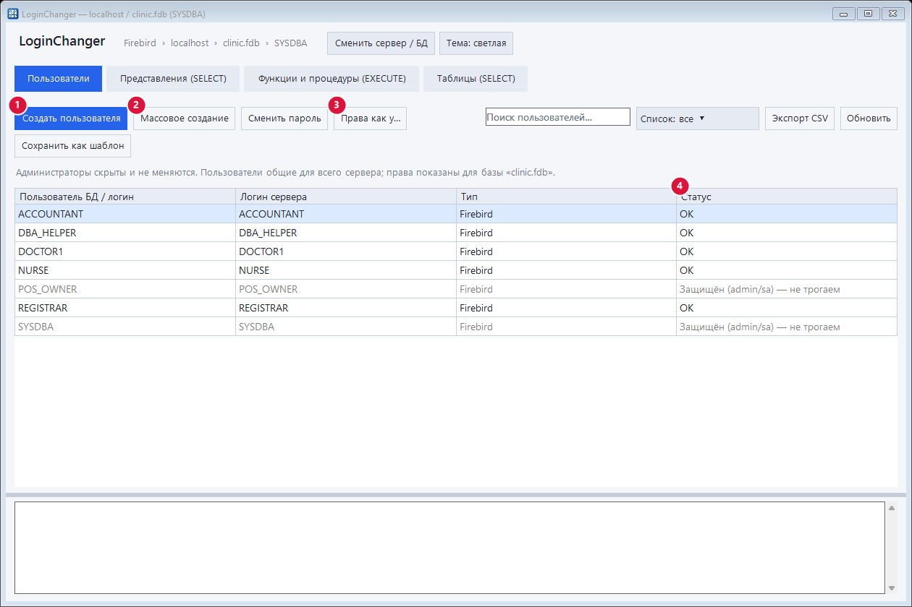
- 1Создание пользователя сервера с паролем и правами по шаблону.
- 2Массовое создание.
- 3«Права как у…».
- 4Статус: администраторы защищены.

- Пользователи общие для сервера (в Firebird — в базе безопасности, в MySQL —
mysql.user); права показываются для выбранной базы. - Администраторы скрыты: Firebird —
SYSDBAи пользователи с ролью администратора; MySQL —root, служебные учётные записи и все, у кого естьSUPERилиGRANT OPTION. - MySQL: имена пишутся
имяилиимя@хост(по умолчанию@%). КомандыGRANT/REVOKEв MySQL фиксируются сразу, поэтому вместо транзакции программа при ошибке выполняет обратные команды для уже применённых. - В матрице видны только явные права на объекты (
GRANT … ON объект); права «на всю базу» не отображаются. - Нет понятий «сирота», «логин без базы» и DENY — они есть только в SQL Server.
3. Главное окно
Сверху — сервер, база и текущий пользователь, кнопки «Сменить сервер / БД» и «Тема». Ниже четыре вкладки: Пользователи, Представления (SELECT), Функции и процедуры (EXECUTE), Таблицы (SELECT). Внизу — журнал действий.
4. Вкладка «Пользователи»
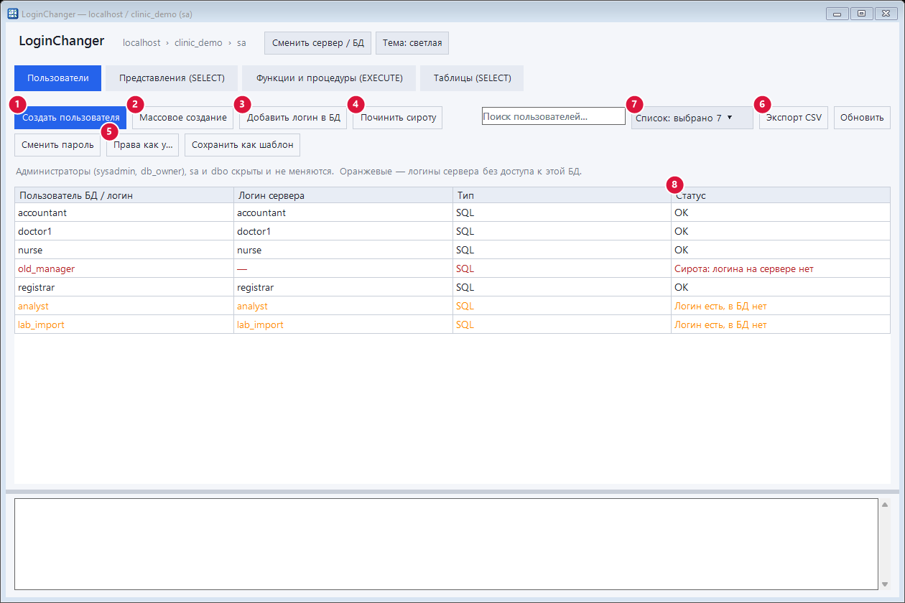
- 1Создать пользователя — логин + пользователь БД + права по шаблону.
- 2Массовое создание — сразу списком.
- 3Добавить логин в БД — для оранжевых строк (логин есть, в базе нет).
- 4Починить сироту — для красных строк.
- 5Права как у… — добавить выбранному пользователю права другого.
- 6Экспорт CSV — выгрузка списка.
- 7Список с галочками — показать только выбранных пользователей.
- 8Статус: OK · «Сирота» (красный) · «Логин есть, в БД нет» (оранжевый).
Также доступны «Сменить пароль» (для SQL-логинов) и «Сохранить как шаблон» (запомнить права выбранного пользователя). Поиск по списку — в поле справа.
sa и dbo в списках не показываются и изменяться не могут.5. Создание пользователя
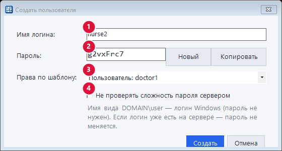
- 1Имя логина. Для учётной записи Windows введите
ДОМЕН\пользователь— пароль не потребуется. - 2Пароль. Сгенерирован автоматически: 8 символов, буквы и цифры без похожих знаков. «Новый» — другой пароль, «Копировать» — в буфер обмена.
- 3Права по шаблону. Можно взять права существующего пользователя или сохранённый шаблон.
- 4Не проверять сложность пароля сервером — включайте, если политика сервера строже сгенерированного пароля.
Что делает программа в зависимости от ситуации:
- Логина нет — создаёт логин и пользователя БД.
- Логин уже есть на сервере, но не добавлен в базу — спросит и добавит (пароль не меняется).
- Пользователь есть в базе без логина («сирота») — предложит создать логин с тем же SID, чтобы права сохранились.
- Имя занято администратором — откажет.
6. Массовое создание
Введите логины — по одному в строке — выберите шаблон прав и нажмите «Создать всех».
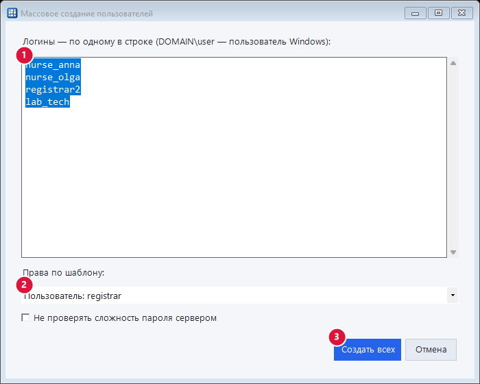
- 1Список логинов. Дубли и пустые строки отбрасываются; разделители — перевод строки,
;или,. - 2Права по шаблону.
- 3Создать всех. Идёт без лишних вопросов; безопасные варианты выбираются автоматически.
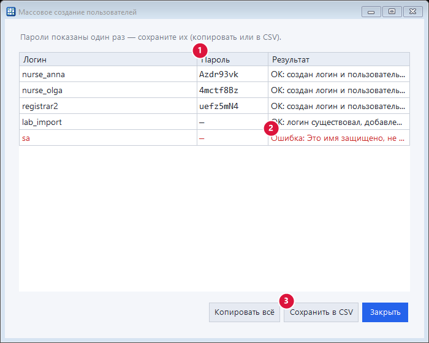
- 1Пароли. Показаны один раз — сохраните сразу. У уже существовавших логинов пароль не менялся (в столбце «—»).
- 2Результат по каждому. Ошибки красным (например, нельзя трогать
sa). - 3Сохранить в CSV / «Копировать всё» — для передачи сотрудникам.
7. «Сироты» и логины без базы
Логин есть, в базе нет (оранжевая строка): выберите её и нажмите «Добавить логин в БД» — программа создаст пользователя БД для существующего логина.
Сирота (красная строка) — пользователь есть в БД, но на сервере нет логина. Выберите строку и нажмите «Починить сироту»:
- есть логин с таким именем — пользователь привяжется к нему;
- SQL-пользователь — создастся логин с тем же SID (права сохранятся), потребуется задать пароль;
- пользователь Windows — создастся логин Windows;
- если учётной записи Windows уже нет — откроется выбор:

«Привязать к другому логину сервера» — пользователь Windows может быть привязан только к логину Windows; права сохранятся, пользователь будет переименован. «Удалить пользователя из этой БД» — после подтверждения.
8. Матрица прав
Строки — объекты, столбцы — пользователи. Галочка = доступ есть. На вкладке «Представления» и «Таблицы» выдаётся SELECT, на вкладке «Функции и процедуры» — EXECUTE (для табличных функций SQL Server требует SELECT, программа подставит его сама).
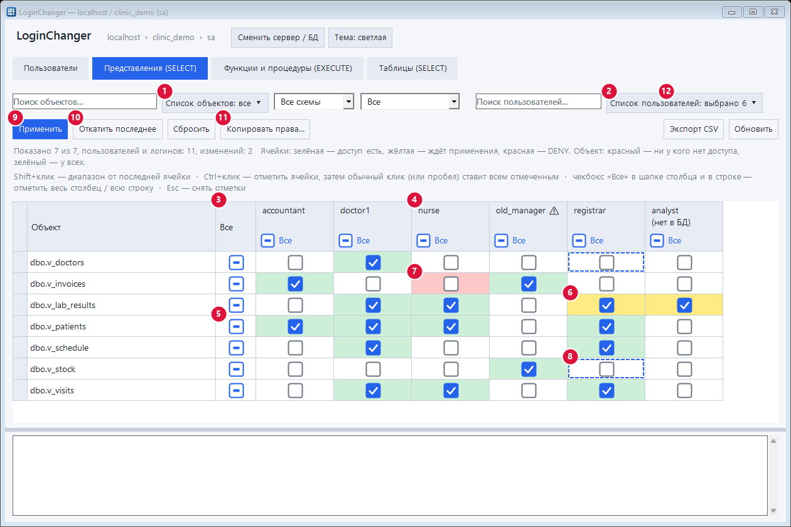
- 1Список объектов — выпадающий список с галочками.
- 2Список пользователей — какие столбцы показывать.
- 3«Все» в строке — отметить/снять объект у всех пользователей. Три состояния: никому, частично, всем.
- 4«Все» в шапке столбца — отметить/снять всё для одного пользователя.
- 5Чекбокс «Все» в строке объекта.
- 6Жёлтая ячейка — изменение ждёт применения.
- 7Красная ячейка — явный запрет (DENY). Выдача права его снимет.
- 8Рамка из штрихов — ячейки, отмеченные через Ctrl.
- 9Применить.
- 10Откатить последнее.
- 11Копировать права…
- 12Экспорт CSV.
Цвета: зелёная ячейка — доступ есть; жёлтая — ждёт применения; красная — DENY. Имя объекта красное — доступа нет ни у кого; зелёное — доступ есть у всех.
Столбцы с пометкой «(нет в БД)» — логины сервера, которых ещё нет в этой базе. Отметьте галочку и нажмите «Применить» — программа спросит и сама добавит такого пользователя в базу. Значок ⚠ у пользователя — «сирота».
Описания объектов. Если у объекта задано описание (в SQL Server — расширенное свойство MS_Description, в Firebird и MySQL — комментарий), оно показывается в колонке «Описание» сразу после имени. Полный текст — во всплывающей подсказке. Поиск по объектам ищет и в описании, а в CSV колонка попадает целиком. Если описаний нет ни у одного объекта, колонка скрыта.
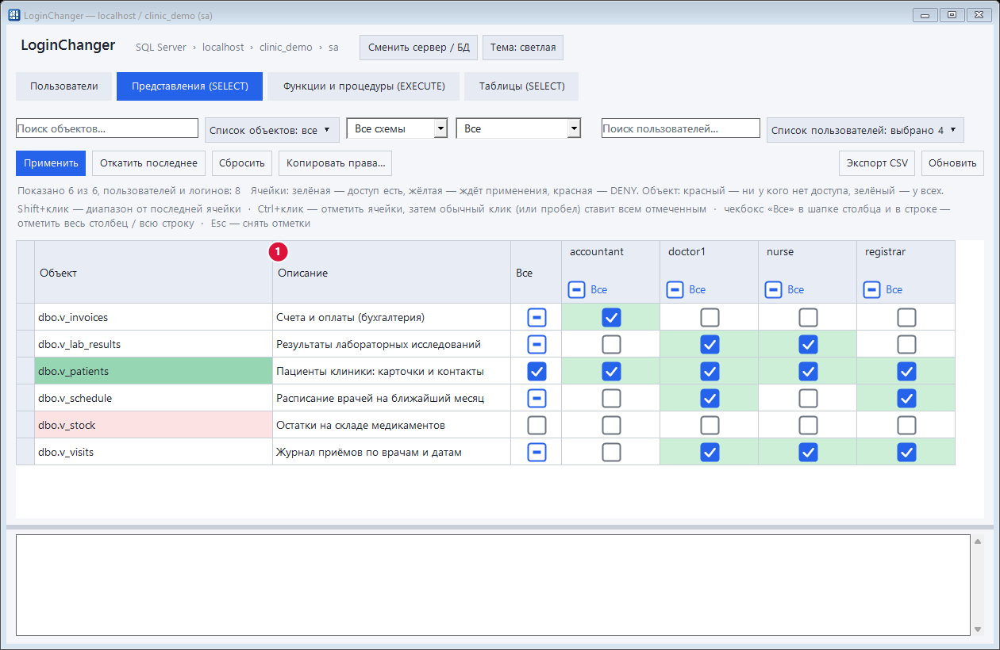
- 1Описание объекта (
MS_Description).
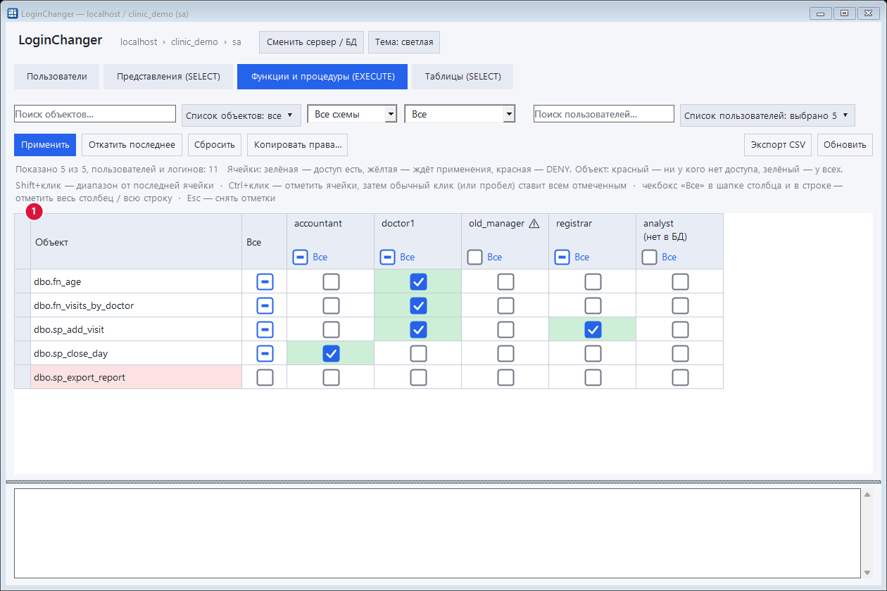
9. Массовая расстановка галочек
- Клик по ячейке (в любом месте) — переключить.
- «Все» в шапке столбца или в строке — весь столбец / вся строка (только видимые, с учётом фильтров).
- Shift + клик — выставить диапазон от последней нажатой ячейки до этой (с тем же состоянием).
- Ctrl + клик — отметить ячейку рамкой (можно несколько). Затем обычный клик по любой ячейке или Пробел поставит/снимет галочки у всех отмеченных. Esc снимает отметки.
- Выделите ячейки мышью и нажмите Пробел — переключатся все выделенные.
10. Поиск и фильтры
- Поиск объектов: несколько слов — объект должен содержать все. Слово с минусом исключает:
patients -old. - Схема и режим: «Все», «Выдано кому-то», «Не выдано никому», «Изменённые».
- Список объектов и Список пользователей — выпадающие списки с галочками: отметьте нужные пункты (поиск внутри списка, «Отметить найденные», «Сбросить»). Ничего не отмечено = показывать всё.
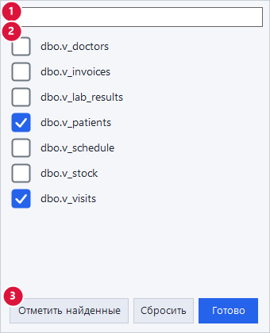
- 1Поиск внутри списка.
- 2Пункты: клик в любом месте строки.
- 3Отметить всё найденное.
11. Применить, сбросить, откатить
- Применить — показывает количество изменений и выполняет их одной транзакцией. Любая ошибка — всё откатывается, ничего не меняется.
- Сбросить — отбросить неприменённые отметки.
- Откатить последнее — выполняет обратные команды последнего применения для этой базы (включая удаление пользователей БД, которые были созданы этим применением). Если ранее стоял DENY, он будет восстановлен.
12. Копирование прав и шаблоны
«Копировать права…» на вкладке матрицы переносит отметки одного пользователя другому по видимым строкам (учитывается фильтр):
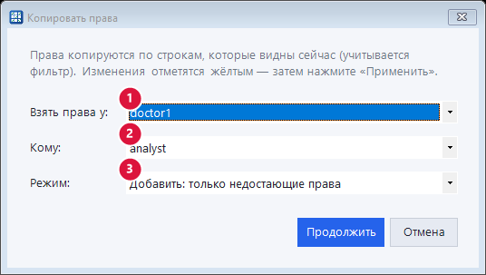
- 1У кого взять.
- 2Кому.
- 3Заменить — сделать точно как у источника; Добавить — только недостающие.
Изменения отмечаются жёлтым — затем нажмите «Применить» (и при необходимости «Откатить»).
Шаблоны. На вкладке «Пользователи» кнопка «Сохранить как шаблон» запоминает права и роли выбранного пользователя в файл templates\имя.tpl. Шаблон можно применять при создании пользователей (одиночном и массовом) и переносить на другие компьютеры, скопировав файл.
13. Экспорт в CSV
Кнопка «Экспорт CSV» сохраняет то, что сейчас видно (учитываются фильтры и скрытые столбцы). Формат — ; и UTF-8 с BOM, файл открывается в Excel двойным кликом. Отметка доступа — знак +.
14. Тема, журнал, файлы

- Тема: кнопка «Тема» переключает светлую и тёмную, выбор запоминается.
- Журнал: нижняя панель окна и файлы
logs\ГГГГ-ММ-ДД.log. Пароли в журнале заменяются на***. - Размер окна: интерфейс адаптивный, кнопки и поля перестраиваются на узких окнах.
15. Что защищено
sa,dbo,guestи системные роли недоступны для изменений.- Логины из
sysadminи пользователи изdb_ownerне отображаются в матрице и не могут быть созданы заново или изменены. - Пароли подключения не сохраняются; файлы шаблонов содержат только права и роли.
16. Горячие клавиши
| Действие | Клавиши |
|---|---|
| Переключить ячейку | клик · Пробел (для выделенных) |
| Диапазон от последней ячейки | Shift + клик |
| Отметить ячейку рамкой | Ctrl + клик |
| Поставить всем отмеченным | обычный клик или Пробел |
| Снять отметки / закрыть список | Esc |
17. Проблемы и решения
«Не удалось получить сведения о пользователе или группе Windows (0x534)»
Учётной записи Windows, на которую создан логин, больше нет. Программа обрабатывает такие логины без ошибок; для починки используйте «Починить сироту» — привяжите пользователя к другому логину Windows или удалите его из базы.
Не находится сервер кнопкой «Найти»
Сетевой поиск требует запущенной службы SQL Server Browser на сервере и открытого UDP-порта 1434. Введите адрес вручную: сервер\экземпляр или сервер,порт.
Пароль не принимается сервером
Политика паролей сервера может быть строже. Включите «Не проверять сложность пароля сервером» в окне создания либо задайте свой пароль.
«ODBC-драйвер не найден» (Firebird / MySQL)
Установите драйвер: Firebird ODBC (с firebirdsql.org) или MySQL Connector/ODBC (с mysql.com). Разрядность драйвера должна совпадать с разрядностью программы (на 64-разрядной Windows — 64-разрядный драйвер).
Нет столбца какого-то пользователя
Возможно, он администратор (sysadmin / db_owner) — такие скрыты намеренно, либо стоит фильтр «Список пользователей».
Окно не помещается / мелкий шрифт
Программа учитывает масштаб Windows (DPI). Растяните окно — панели перестроятся.